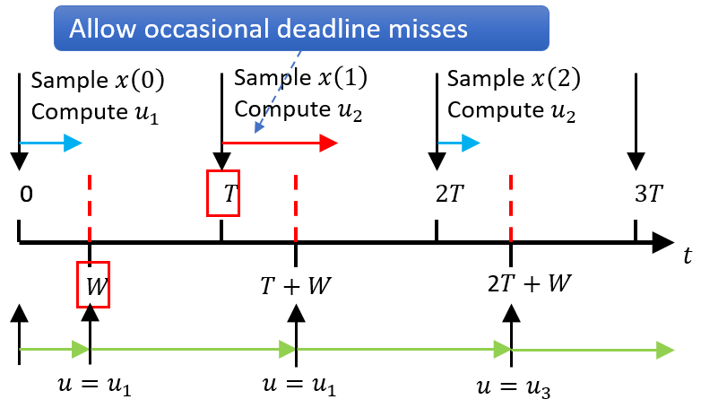
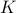
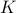

Verification of Weakly-hard Systems
Project overview
|  | Timing uncertainty is one major type of uncertainty during the operation of autonomous systems, i.e., how much time it takes for certain function to complete and whether that meets the deadline. We consider the weakly-hard systems, where deadline misses are allowed in a bounded manner. A common example is that such deadline misses are described by (m,K) constraints, which simply specifies that among any K consecutive executions, at most m instances can miss their execution deadlines. One of the most important functional properties is safety. In our weakly-hard framework, we consider whether the system with (m,K) constraints will ever enter a pre-specified unsafe state set. We develop several approaches to formally verify the safety of weakly-hard systems. |
One-dimensional Abstraction
We address the safety of nonlinear weakly-hard systems for the first time in literature. Our approach derives a safe initial set for any given (m,K) constraint, that is, starting from any initial state within such set, the system will always stay within the same safe state set under the given weakly-hard constraint. Specifically, we first convert the infinite-time safety problem into a finite one by finding a set satisfying both emph{local safety} and emph{inductiveness}. Local safety ensures that the system stays in the safe region within K steps, and inductiveness guarantees that the system will go back to the initial set after K steps. Thus the set that satisfies both local safety and inductiveness is theoretically guaranteed to be a safe initial set. To make estimating such a set tractable, we make two assumptions – exponential stability of the system without deadline misses and Lipschitz continuity of system dynamics – to help bound the system behavior under different situations. Then we can abstract the problem as a one-dimensional problem and use linear programming (LP) to obtain a certified safe initial set.
|
Discretization and Graph Theory
We observe that in practice, the assumptions in one-dimensional abstraction approach are sometimes hard to satisfy and the parameters of exponential stability are difficult to obtain. Moreover, while the scalar abstraction provides high efficiency, experiments indicate that the estimation is often overly conservative. Thus, we further relax the aforementioned assumptions by leveraging state space discretization and graph theory in.
Specifically, we first discretize the safe state set
|
 into grids, and then try to find the grid set that satisfies both local safety and inductiveness. For each property, we build a directed graph, where each node corresponds to a grid and each directed edge represents the mapping between grids with respect to reachability. We are then able to leverage dynamic programming and inverse search algorithms to construct the initial safe set.
into grids, and then try to find the grid set that satisfies both local safety and inductiveness. For each property, we build a directed graph, where each node corresponds to a grid and each directed edge represents the mapping between grids with respect to reachability. We are then able to leverage dynamic programming and inverse search algorithms to construct the initial safe set.Tools: SAW
We have implemented this idea as a tool SAW, which is available HERE. Please be free to play with it.
Discrete Systems
We also consider discrete-time systems described as labeled transition systems, and explores logical relationships among weakly-hard constraints with various
|
 and  values. The approach improves the verification efficiency by only checking the satisfaction boundary, rather than the whole configuration space of .
and  values. The approach improves the verification efficiency by only checking the satisfaction boundary, rather than the whole configuration space of .